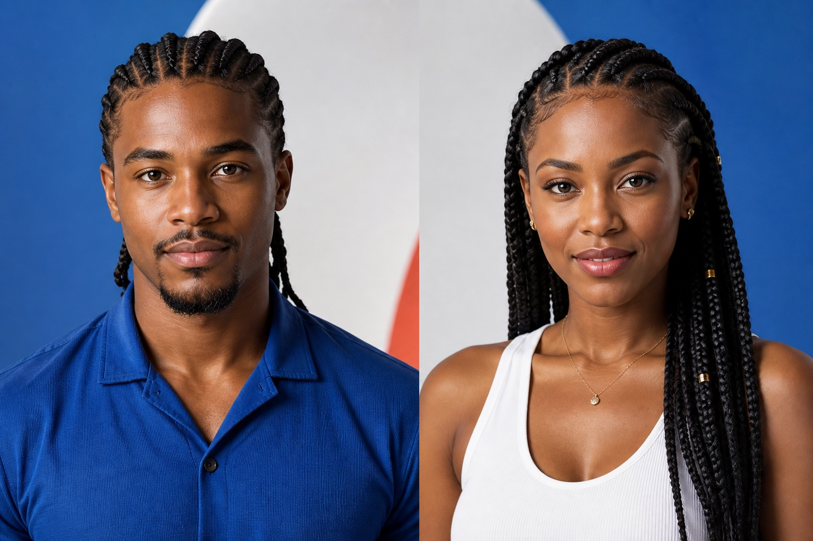
Image templateGet Cape Verdeanized
See yourself with a professionally styled braided look while preserving your identity.
- Input
- 1 photo
- Result
- Portrait set
Thousands of ready-made templates turn one photo into a finished image or video. Choose the result. The model mix is already built in.
No model research. No workflow setup. Just choose, upload and create.
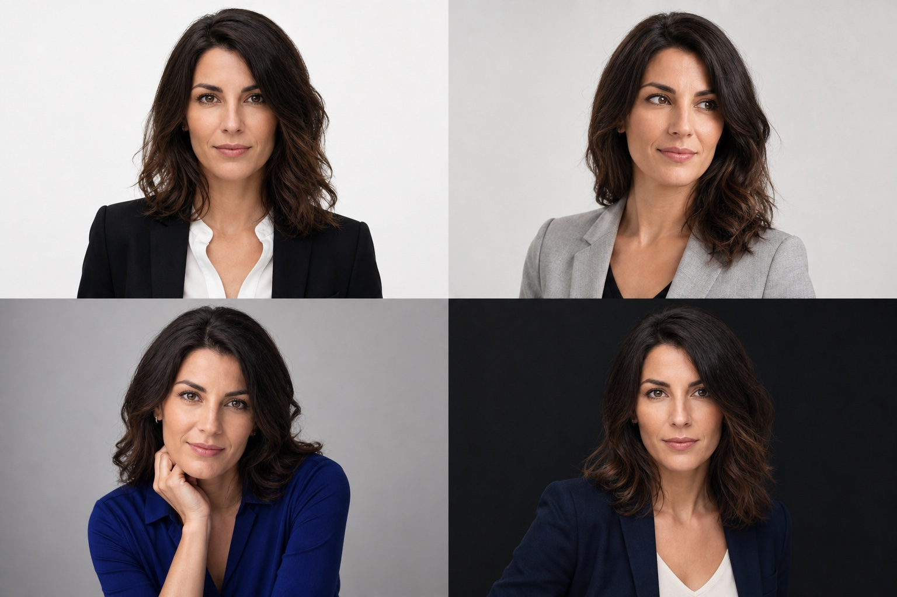
Upload one clear photo. Receive four coordinated studio-grade portraits.
Real work across portraiture, products, sport, natural photography and imagined worlds.
A model, a product and a companion developed as one cohesive campaign—not four unrelated generations.

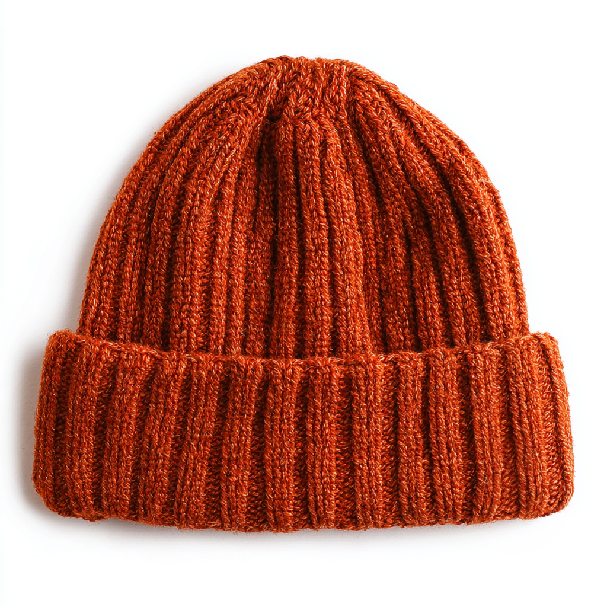
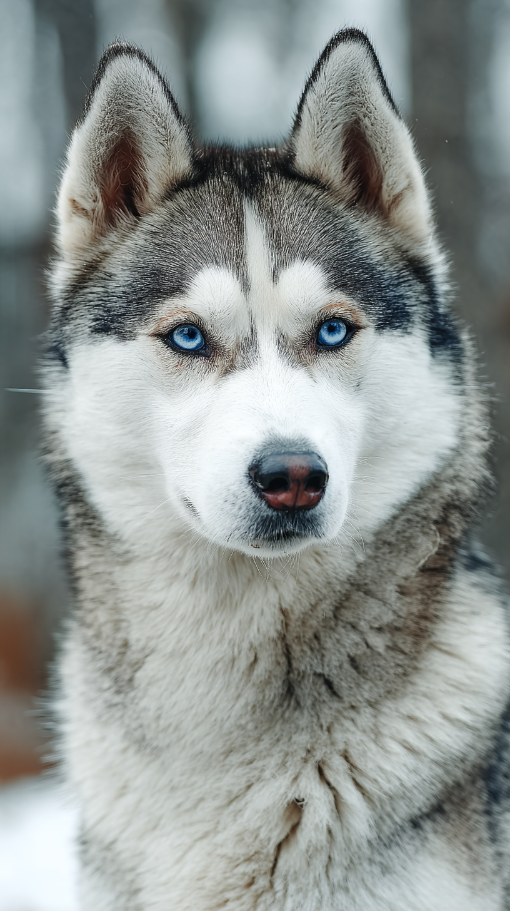
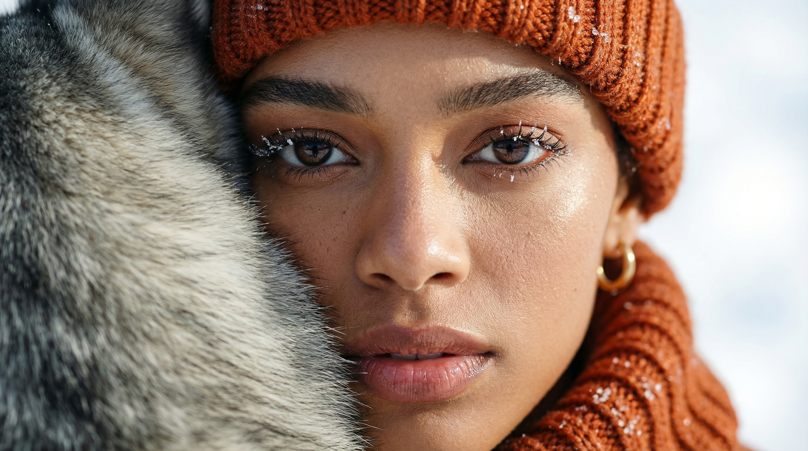

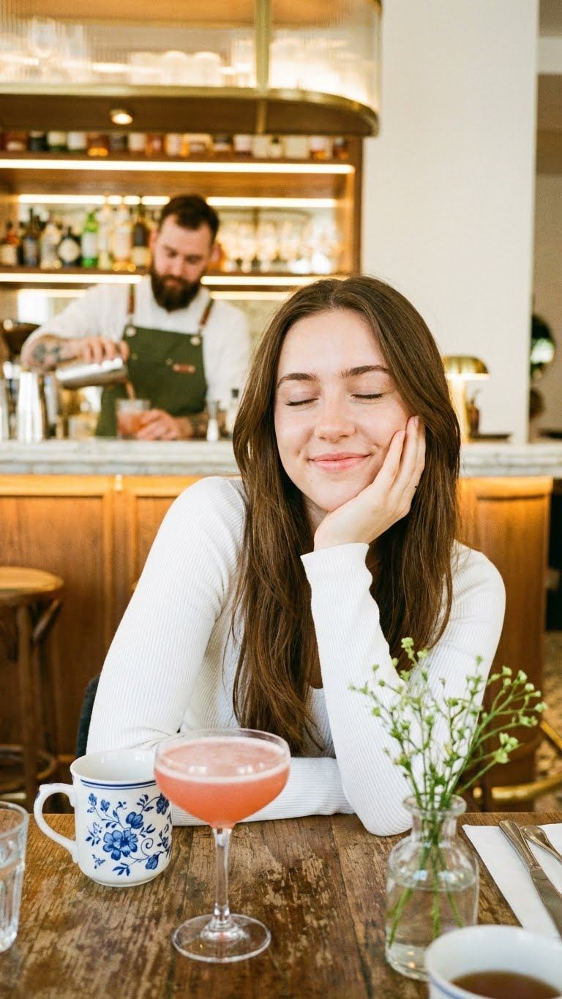
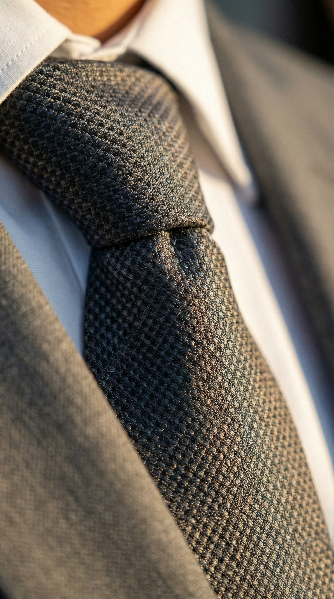
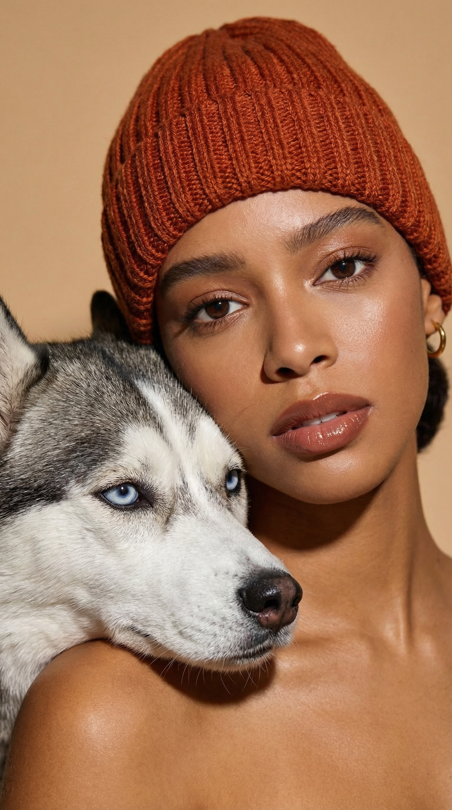
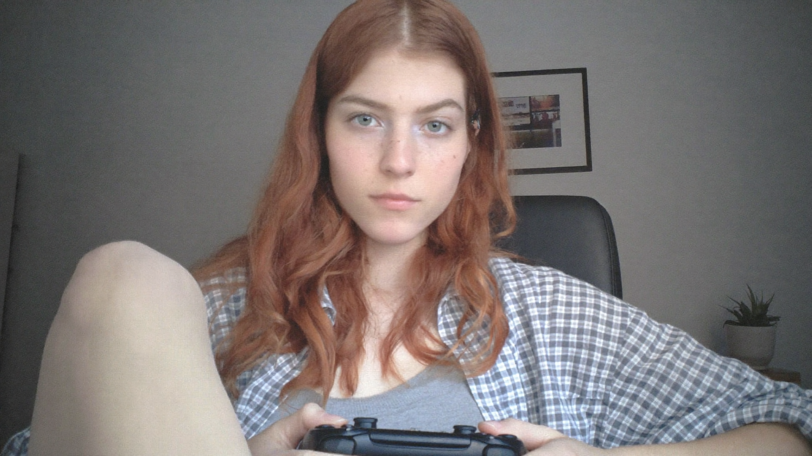

.JPEG)

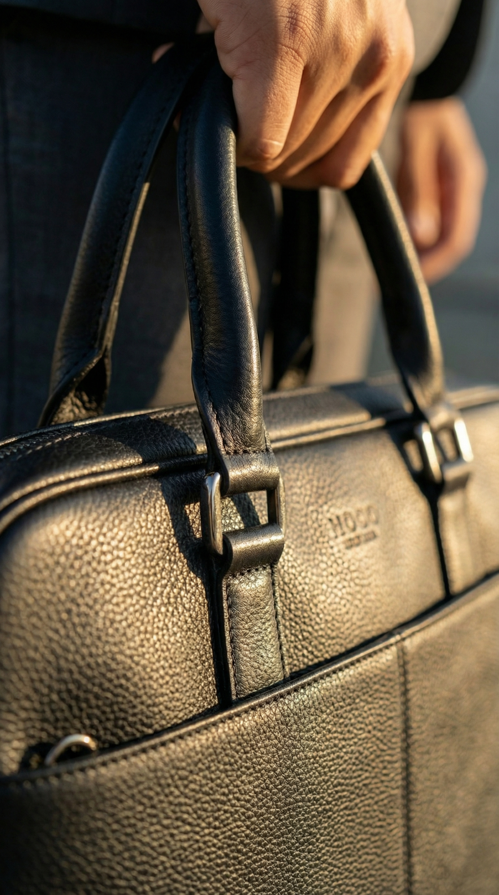


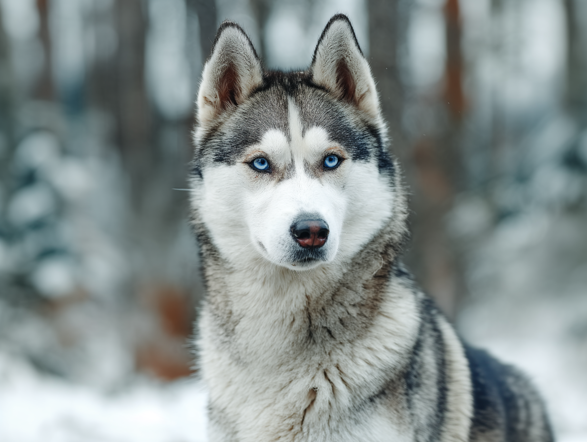

Every template contains the prompt, format and model workflow already prepared. Choose a look, upload one photo and create.

Image templateSee yourself with a professionally styled braided look while preserving your identity.
Turn one clear photo into four professional, coordinated studio portraits.
Step into the stands wearing Cape Verde colours and celebrate with the crowd.
Use a single model or combine image and video models in one workflow. Templates hide the setup; the creator gives you full control.
Fast image creation for drafts, variations and everyday templates.
Higher-quality image generation with strong instruction following and editing.
High-fidelity image creation and editing for finished visual work.
Efficient motion generation for fast previews and lightweight social clips.
Faster video generation with a practical balance of speed and quality.
Higher-resolution video generation for cinematic and campaign work.
Every generation shows its final price before you confirm it. Provider base rates above are shown in USD for reference; Braids displays the exact total for your chosen model, format and duration.
*Current provider base rates are indicative and vary by resolution, quality and output size. Live generation will be connected progressively.
Curated prompts, reference outputs and practical guidance—built for consistent results across leading image models.
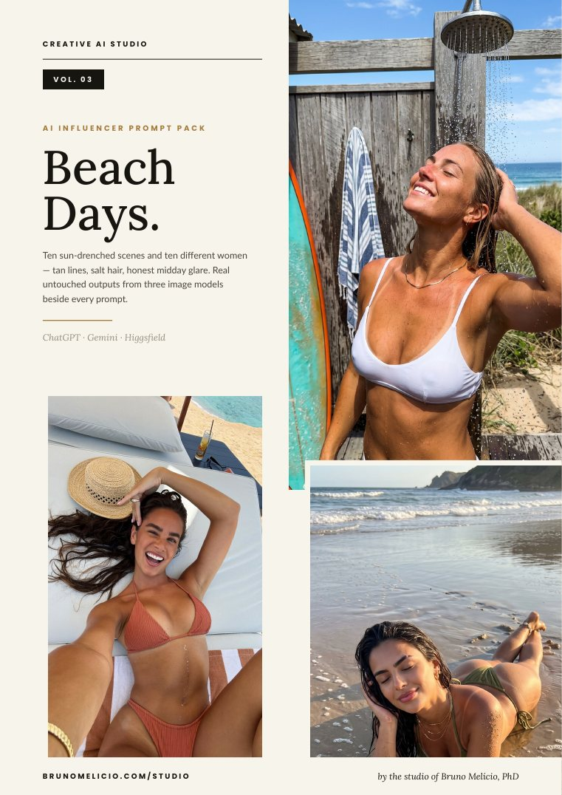
Ten sun-drenched scenes, multiple model outputs and ready-to-use prompts.
View pack →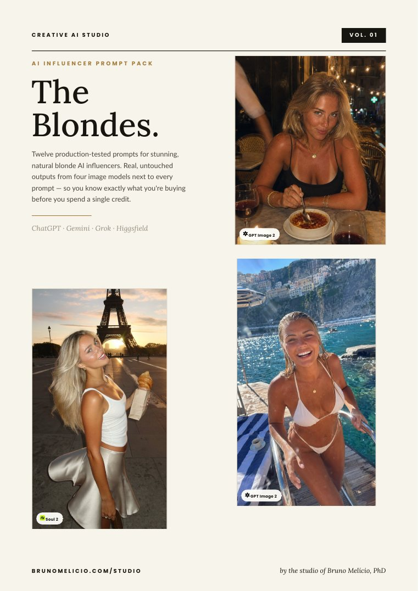
Distinct looks and consistent character directions.
View pack →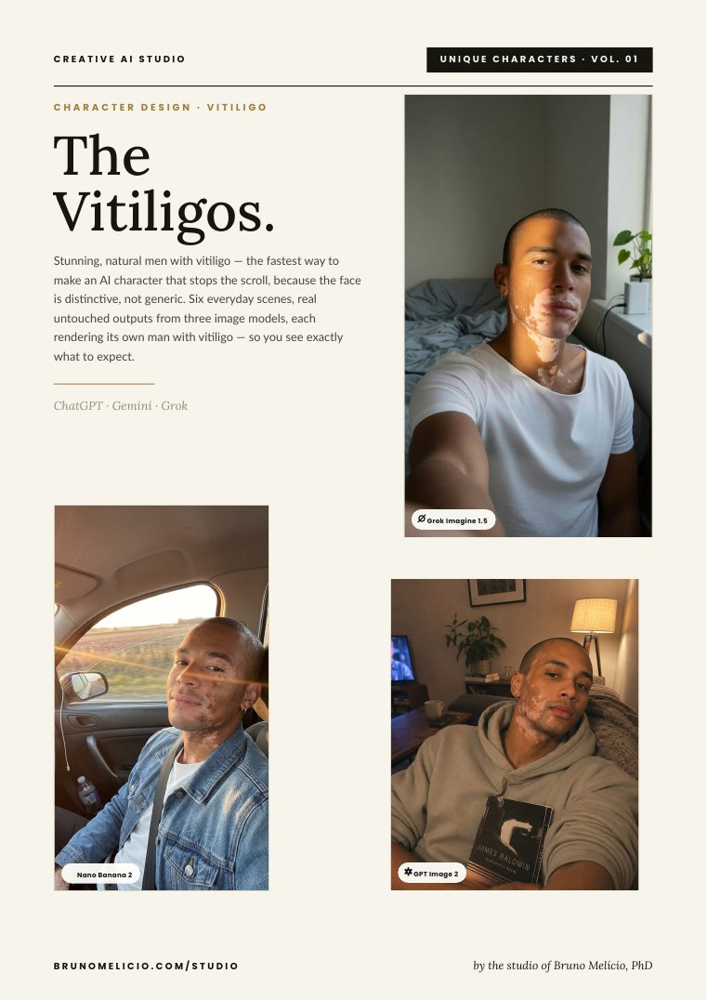
Editorial character concepts with visual examples.
View pack →Create an account and enter the studio. Pay only when you choose to generate.